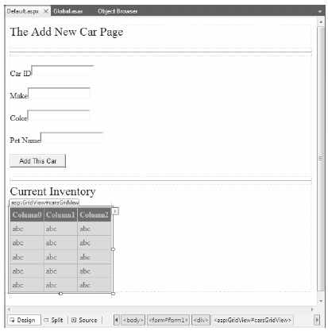

ASP.NET provides a second and more flexible way to handle application-wide data. As you recall, the values within the HttpApplicationState object remain in memory as long as your web application is alive and kicking. Sometimes, however, you may want to maintain a piece of application data only for a specific period of time. For example, you may wish to obtain an ADO.NET DataSet that is valid for only five minutes. After that time, you may want to obtain a fresh DataSet to account for possible database updates. While it’s technically possible to build this infrastructure using HttpApplicationState and some sort of handcrafted monitor, the ASP.NET application cache greatly simplifies your task.
As its name suggests, the ASP.NET System.Web.Caching.Cache object (which is accessible via the Context.Cache property) allows you to define objects that are accessible by all users from all pages for a fixed amount of time. In its simplest form, interacting with the cache looks identical to interacting with the HttpApplicationState type:
// Add an item to the cache. // This item will *not* expire. Context.Cache["SomeStringItem"] = "This is the string item"; // Get item from the cache. string s = (string)Context.Cache["SomeStringItem"];
Note If you wish to access the cache from within Global.asax, you need to use the Context property. However, if you are within the scope of a System.Web.UI.Page-derived type, you can access the Cache object directly via the page’s Cache property.
The System.Web.Caching.Cache class defines only a small number of members beyond the type’s indexer. You can use the Add() method to insert a new item into the cache that is not currently defined (if the specified item is already present, Add() effectively does nothing). The Insert() method will also place a member into the cache. If the item is currently defined, however, Insert() will replace the current item with the new object. Since this is generally the behavior you’ll desire, I’ll focus on the Insert() method exclusively.
Let’s see an example. To begin, create a new Empty Web Site named CacheState and insert a Web Form and a Global.asax file. Like an application-level data item maintained by the HttpApplicationState type, the cache may hold any System.Object-derived type and is often populated within the Application_Start() event handler. For this example, the goal is to automatically update the contents of a DataSet every 15 seconds. The DataSet in question will contain the current set of records from the Inventory table of the AutoLot database created during our discussion of ADO.NET.
Given these design notes, set a reference to AutoLotDAL.dll (see Chapter 21) and update your Global.asax like so (code analysis to follow):
<%@ Application Language="C#" %> <%@ Import Namespace = "AutoLotConnectedLayer" %> <%@ Import Namespace = "System.Data" %> <script runat="server"> // Define a static-level Cache member variable. static Cache theCache; void Application_Start(Object sender, EventArgs e) { // First assign the static 'theCache' variable. theCache = Context.Cache; // When the application starts up, // read the current records in the // Inventory table of the AutoLot DB. InventoryDAL dal = new InventoryDAL(); dal.OpenConnection(@"Data Source=(local)\SQLEXPRESS;" + "Initial Catalog=AutoLot;Integrated Security=True"); DataTable theCars = dal.GetAllInventory(); dal.CloseConnection(); // Now store DataTable in the cache. theCache.Insert("AppDataTable", theCars, null, DateTime.Now.AddSeconds(15), Cache.NoSlidingExpiration, CacheItemPriority.Default, new CacheItemRemovedCallback(UpdateCarInventory)); } // The target for the CacheItemRemovedCallback delegate. static void UpdateCarInventory(string key, object item, CacheItemRemovedReason reason) { InventoryDAL dal = new InventoryDAL(); dal.OpenConnection(@"Data Source=(local)\SQLEXPRESS;" + "Initial Catalog=AutoLot;Integrated Security=True"); DataTable theCars = dal.GetAllInventory(); dal.CloseConnection(); // Now store in the cache. theCache.Insert("AppDataTable", theCars, null, DateTime.Now.AddSeconds(15), Cache.NoSlidingExpiration, CacheItemPriority.Default, new CacheItemRemovedCallback(UpdateCarInventory)); } ... </script>
First, notice we've defined a static Cache member variable. The reason is that you’ve defined two static members that need to access the Cache object. Recall that static methods do not have access to inherited members, so you can’t use the Context property!
Inside the Application_Start() event handler, you fill a DataTable and insert it into the application cache. As you would guess, the Context.Cache.Insert() method has been overloaded a number of times. Here, you supply a value for each possible parameter. Consider the following commented call to Insert():
theCache.Insert("AppDataTable", // Name used to identify item in the cache. theCars, // Object to put in the cache. null, // Any dependencies for this object? DateTime.Now.AddSeconds(15), // Absolute timeout value. Cache.NoSlidingExpiration, // Don't use sliding expiration (see below) CacheItemPriority.Default, // Priority level of cache item. // Delegate for CacheItemRemove event. new CacheItemRemovedCallback(UpdateCarInventory));
The first two parameters simply make up the name/value pair of the item. The third parameter allows you to define a CacheDependency object (which is null in this case, as the DataTable does not depend on anything).
The DateTime.Now.AddSeconds(15) parameter specifies an absolute expiration time. It means the cache item will definitely be evicted from the cache after 15 seconds. Absolute expiration is useful for data items that need to be constantly refreshed (such as a stock ticker).
The Cache.NoSlidingExpiration parameter specifies that the cache item doesn’t use sliding expiration. Sliding expiration is a way of keeping an item in the cache for at least a certain amount of time. For example, if you set a sliding expiration of 60 seconds for a cache item, it will live in the cache for at least 60 seconds. If any web page accesses the cache item within that time, the clock is reset and the cache item has a fresh 60 seconds to live. If no web page accesses the cache item in 60 seconds, the item is removed from the cache. Sliding expiration is useful for data that might be expensive (time-wise) to generate, but which might not be used very frequently by web pages.
Note that you can’t specify both an absolute expiration and a sliding expiration for a given cache item. You set either an absolute expiration (and use Cache.NoSlidingExpiration) or a sliding expiration (and use Cache.NoAbsoluteExpiration)
Finally, as you can see from the signature of the UpdateCarInventory() method, the CacheItemRemovedCallback delegate can only call methods that match the following signature:
void UpdateCarInventory(string key, object item, CacheItemRemovedReason reason) { }
So, at this point, when the application starts up, the DataTable is populated and cached. Every 15 seconds, the DataTable is purged, updated, and reinserted into the cache. To see the effects of doing this, you need to create a page that allows for some degree of user interaction.
Update the UI of your initial *.aspx file as shown in Figure 34-6.
Figure 34-6 The cache application GUI
In the page’s Load event handler, configure your GridView to display the current contents of the cached DataTable the first time the user posts to the page (be sure to import the System.Data and AutoLotConnectedLayer namespaces within your code file):
protected void Page_Load(object sender, EventArgs e) { if (!IsPostBack) { carsGridView.DataSource = (DataTable)Cache["AppDataTable"]; carsGridView.DataBind(); } }
In the Click event handler of the Add This Car button, insert the new record into the AutoLot database using the InventoryDAL type. Once the record has been inserted, call a helper function named RefreshGrid(), which will update the UI:
protected void btnAddCar_Click(object sender, EventArgs e) { // Update the Inventory table // and call RefreshGrid(). InventoryDAL dal = new InventoryDAL(); dal.OpenConnection(@"Data Source=(local)\SQLEXPRESS;" + "Initial Catalog=AutoLot;Integrated Security=True"); dal.InsertAuto(int.Parse(txtCarID.Text), txtCarColor.Text, txtCarMake.Text, txtCarPetName.Text); dal.CloseConnection(); RefreshGrid(); } private void RefreshGrid() { InventoryDAL dal = new InventoryDAL(); dal.OpenConnection(@"Data Source=(local)\SQLEXPRESS;" + "Initial Catalog=AutoLot;Integrated Security=True"); DataTable theCars = dal.GetAllInventory(); dal.CloseConnection(); carsGridView.DataSource = theCars; carsGridView.DataBind(); }
Now, to test the use of the cache, begin by running the current program (Ctrl+F5) and copy the URL appearing in the browser to your clipboard. Next, launch a second instance of your browser (using the Start button) and paste the URL into this instance. At this point you should have two instances of your web browser, both viewing Default.aspx and showing identical data.
In one instance of the browser, add a new automobile entry. Obviously, this results in an updated GridView viewable from the browser that initiated the postback.
In the second browser instance, click the Refresh button (F5). You should not see the new item, since the Page_Load event handler is reading directly from the cache. (If you did see the value, the 15 seconds had already expired. Either type faster or increase the amount of time the DataTable will remain in the cache.) Wait a few seconds and click the Refresh button from the second browser instance one more time. Now you should see the new item, given that the DataTable in the cache has expired and the CacheItemRemovedCallback delegate target method has automatically updated the cached DataTable.
As you can see, the major benefit of the Cache type is that you can ensure that when an item is removed, you have a chance to respond. In this example, you certainly could avoid using the Cache and simply have the Page_Load() event handler always read directly from the AutoLot database (but this would potentially be much slower than the caching approach). Nevertheless, the point should be clear: the cache allows you to automatically refresh data using the cache mechanism.
Source Code The CacheState web site is included under the Chapter 34 subdirectory.